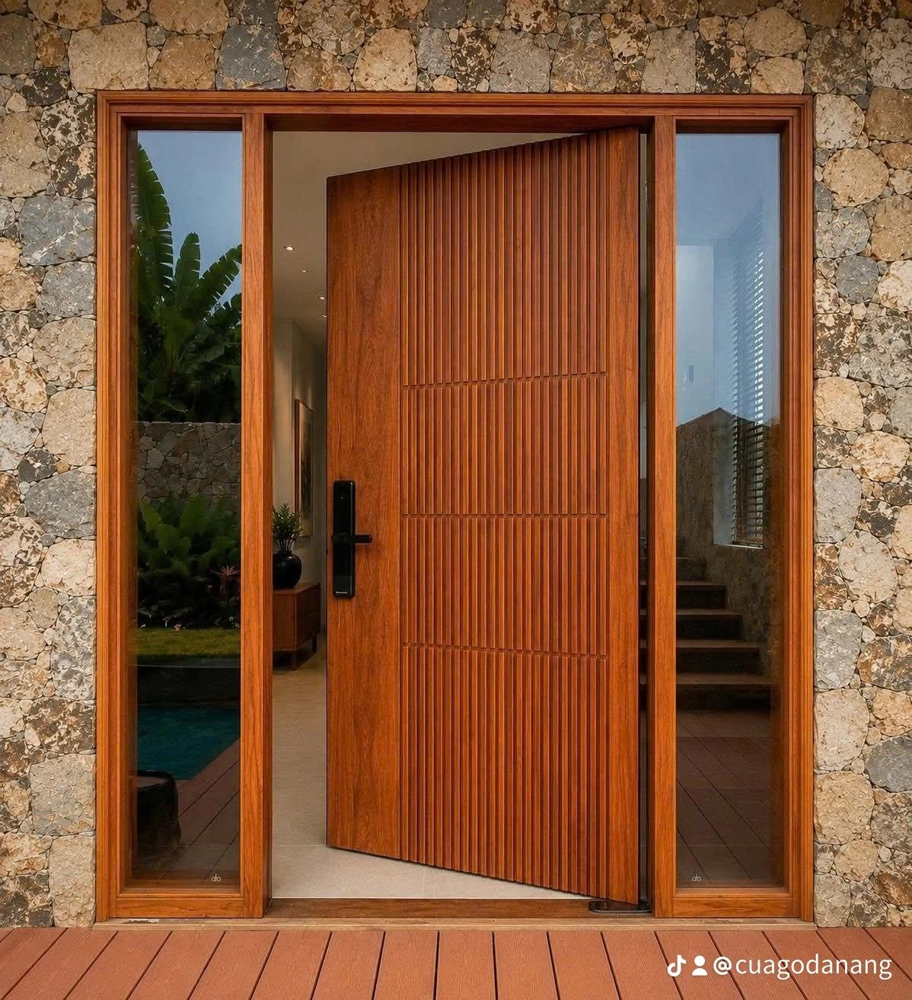
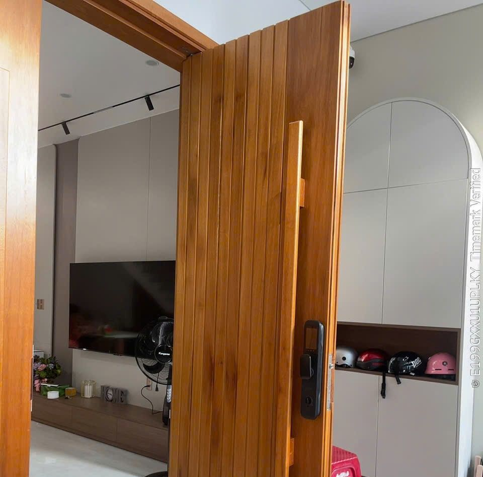
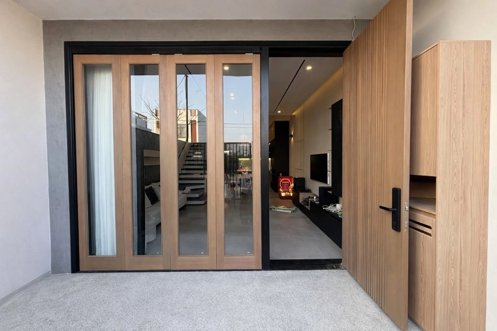

Nói ngắn: cửa xoay trục là cửa quay quanh một trục đứng đặt lệch vào trong cánh, đỡ bằng bản lề sàn chôn dưới nền, thay vì treo trên bản lề lá ở cạnh khung. Kiểu cửa này hợp nhất với cửa chính khổ lớn, cánh gỗ nặng, khi bạn muốn mặt tiền liền mạch và sang. Nó không hợp với ô cửa hẹp, lối cần đưa xe máy hoặc đồ lớn qua thường xuyên, hay nhà đã lát nền xong mà không muốn khoét lại.
Cửa xoay trục là gì, cấu tạo gồm những gì?
Cửa thường treo cánh bằng hai, ba bản lề lá gắn vào cạnh khung, cánh mở ra như một trang sách. Cửa xoay trục (còn gọi là cửa pivot) thì khác: cánh quay quanh một trục thẳng đứng, trục này nằm cách mép cánh một đoạn chứ không nằm sát khung. Khi mở, một phần cánh xoay ra ngoài, phần còn lại xoay vào trong, chia ô cửa thành hai lối.
Một bộ cửa xoay trục gỗ gồm bốn phần chính:
- Bản lề sàn: hộp cơ cấu chôn âm dưới nền, đỡ toàn bộ trọng lượng cánh và giúp cánh tự đóng lại. Đây là phần chịu lực quan trọng nhất.
- Chốt trục trên: gắn ở khung bao phía trên, thẳng hàng với trục của bản lề sàn để giữ cánh đứng thẳng.
- Cánh cửa: thường là gỗ tự nhiên dày, khổ rộng hơn cửa thường.
- Khoá và tay nắm: phần lớn công trình chúng tôi làm dùng khoá điện tử kèm tay nắm dài.
So sánh nhanh với cửa bản lề thường
| Tiêu chí | Cửa xoay trục | Cửa bản lề lá |
|---|---|---|
| Cách đỡ cánh | Bản lề sàn đỡ từ dưới nền | Bản lề lá treo ở cạnh khung |
| Khổ cánh | Hợp cánh rộng, nặng | Hợp cánh vừa và nhỏ |
| Phụ kiện lộ ra | Gần như không thấy | Thấy bản lề ở mép cánh |
| Lối đi khi mở | Chia hai lối hai bên trục | Thông cả ô cửa |
| Thi công nền | Phải khoét nền chôn hộp | Không cần |
| Chi phí phụ kiện | Cao hơn | Thấp hơn |
Ưu điểm của cửa xoay trục

- Làm được cánh lớn và nặng. Bản lề sàn đỡ cánh từ bên dưới nên cánh gỗ dày, khổ rộng vẫn quay êm. Với bản lề lá, cánh nặng dễ kéo lệch khung và xệ dần theo thời gian.
- Mặt tiền liền mạch, sang trọng. Không có bản lề lộ ở mép cánh, mặt gỗ nhìn trọn vẹn từ trên xuống dưới. Rất hợp với cánh soi rãnh, phối lam hay ghép vân ngang.
- Cánh tự đóng, ít phải chỉnh. Bản lề sàn có cơ cấu đưa cánh về vị trí đóng. Lắp đúng kỹ thuật thì cánh đứng vững, ít phải căn chỉnh lại.
- Dễ phối vách kính. Cánh xoay trục thường đi cùng ô kính cố định hai bên hoặc một bên, lấy sáng cho sảnh mà vẫn giữ một khối cửa gọn.
Nhược điểm cần biết trước
- Lối đi bị chia đôi. Khi mở, cánh nằm giữa ô cửa, mỗi bên chỉ còn một phần chiều rộng. Đưa xe máy, tủ lạnh hay sofa qua sẽ chật hơn cửa thường cùng khổ.
- Phải khoét nền. Hộp bản lề sàn chôn dưới nền, nên tốt nhất quyết định làm cửa xoay trục trước khi lát gạch, lát đá. Nhà đã hoàn thiện vẫn làm được nhưng phải khoét và vá lại nền.
- Chi phí cao hơn. Riêng bản lề sàn Imundex loại 120kg đã có giá niêm yết khoảng 2,9 triệu đồng (xem bài về bản lề sàn Imundex), chưa kể cánh to hơn nên tốn gỗ hơn.
- Đòi hỏi lắp chính xác. Bản lề sàn và chốt trên phải thẳng hàng tuyệt đối. Lệch vài milimet là cánh đóng không khít, cọ sàn hoặc tự mở hé.
Khi nào nên dùng cửa xoay trục?
- Cửa chính nhà phố, villa có ô cửa rộng, muốn một cánh gỗ lớn thay vì hai cánh nhỏ.
- Mặt tiền cần điểm nhấn: cánh gỗ soi rãnh, phối lam đứng, ghép vân ngang, đi kèm ô kính cố định.
- Nhà đang xây hoặc đang hoàn thiện nền, còn kịp chừa vị trí chôn bản lề sàn.
- Lối ra vào chính chủ yếu cho người đi, còn xe và đồ lớn đi lối gara hoặc cửa khác.
Khi nào nên chọn kiểu cửa khác?
- Ô cửa hẹp: cánh xoay trục chia đôi lối đi, ô hẹp sẽ thành hai khe chật. Cửa bản lề thường hợp hơn.
- Cần lối rộng cho xe máy, đồ đạc: cân nhắc cửa hai cánh, hoặc cửa mẹ con, ví dụ cửa gỗ Kiền Kiền nhà anh Phan Anh: cánh lớn xoay trục cho đi lại hằng ngày, cánh phụ mở thêm khi cần lối rộng.
- Cửa phòng bên trong nhà: cửa phòng ngủ, phòng tắm thường không cần cánh lớn, dùng bản lề âm sẽ gọn và tiết kiệm hơn (xem bài về bản lề âm Imundex).
Lưu ý khi làm cửa xoay trục bằng gỗ tự nhiên

- Chọn gỗ ổn định, ít cong vênh. Cánh càng lớn càng dễ lộ cong vênh. Teak, Lim và Kiền Kiền là ba loại chúng tôi dùng nhiều nhất cho cửa xoay trục (xem so sánh gỗ Teak, Lim và Kiền Kiền).
- Tính trọng lượng cánh trước khi chọn bản lề sàn. Chọn mức tải cao hơn trọng lượng thực của cánh, cộng cả ô kính, tay nắm và khoá.
- Đặt vị trí trục trên bản vẽ. Trục càng xa mép, hai lối đi càng cân nhau nhưng cánh chiếm nhiều chỗ khi mở. Nên thống nhất trên bản vẽ trước khi xuống xưởng.
- Che mưa nắng cho cửa mặt tiền. Có mái đua hoặc ô văng phía trên giúp lớp sơn và mặt gỗ bền hơn, nhất là mùa mưa miền Trung.
- Đo ô cửa thực tế, lắp thử tại xưởng. Chúng tôi đo tại công trình, dựng bản vẽ, khoét và lắp thử phụ kiện ngay tại xưởng rồi mới mang ra công trình lắp đặt.
Công trình cửa xoay trục tham khảo
- Cửa gỗ Teak ô kính hai bên, Hội An
- Cửa và cầu thang gỗ Teak nhà anh Hưng, Hoà Xuân
- Cửa gỗ Kiền Kiền khung bao sơn đen, Hoà Xuân
- Cửa và cầu thang gỗ Kiền Kiền, Hoà Xuân
- Cửa gỗ Lim CNC hoa, Điện Bàn
- Cửa xoay trục Hải Châu
Xem thêm các mẫu khác ở trang Cửa chính và phụ kiện ở trang Phụ kiện cửa.
Gửi kích thước ô cửa, chúng tôi tư vấn có nên làm xoay trục không và báo giá trọn bộ kèm phụ kiện.
Nhận báo giá